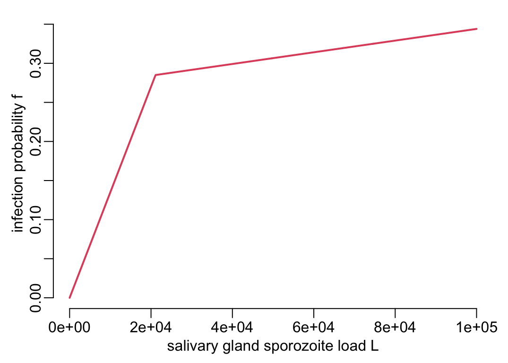
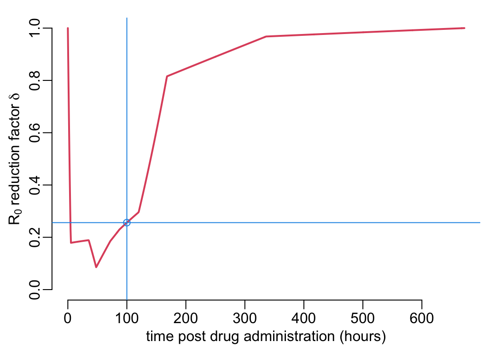
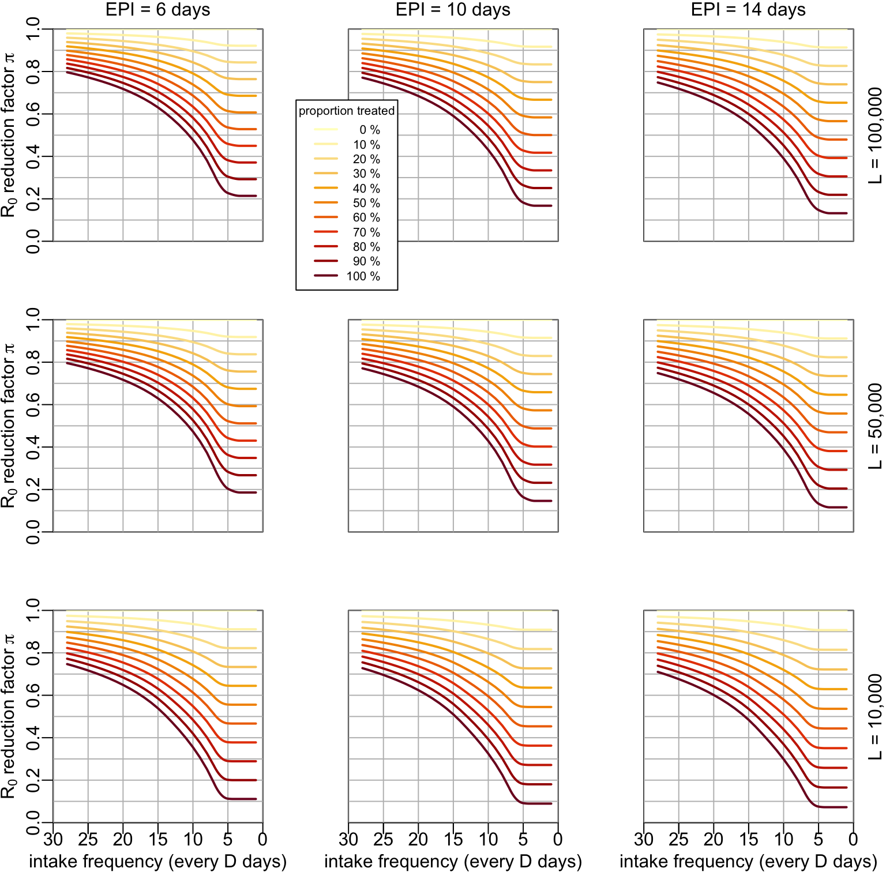
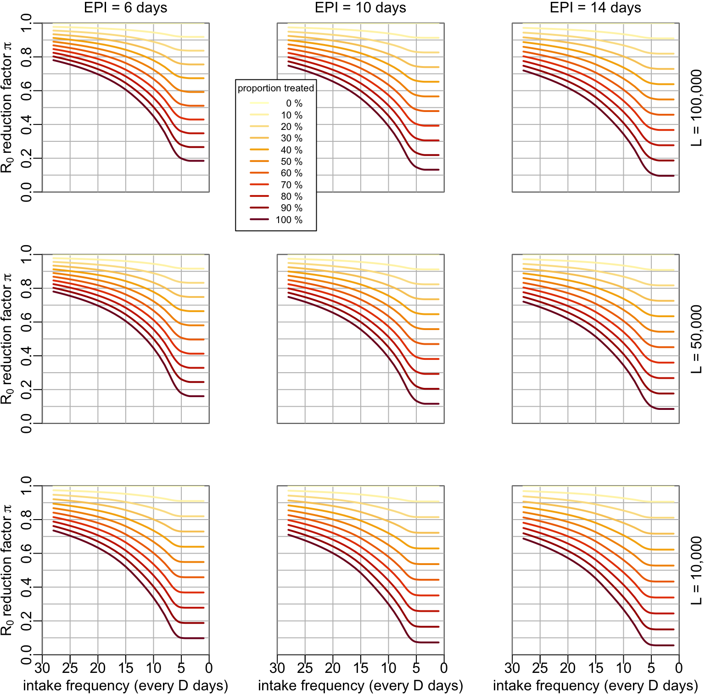
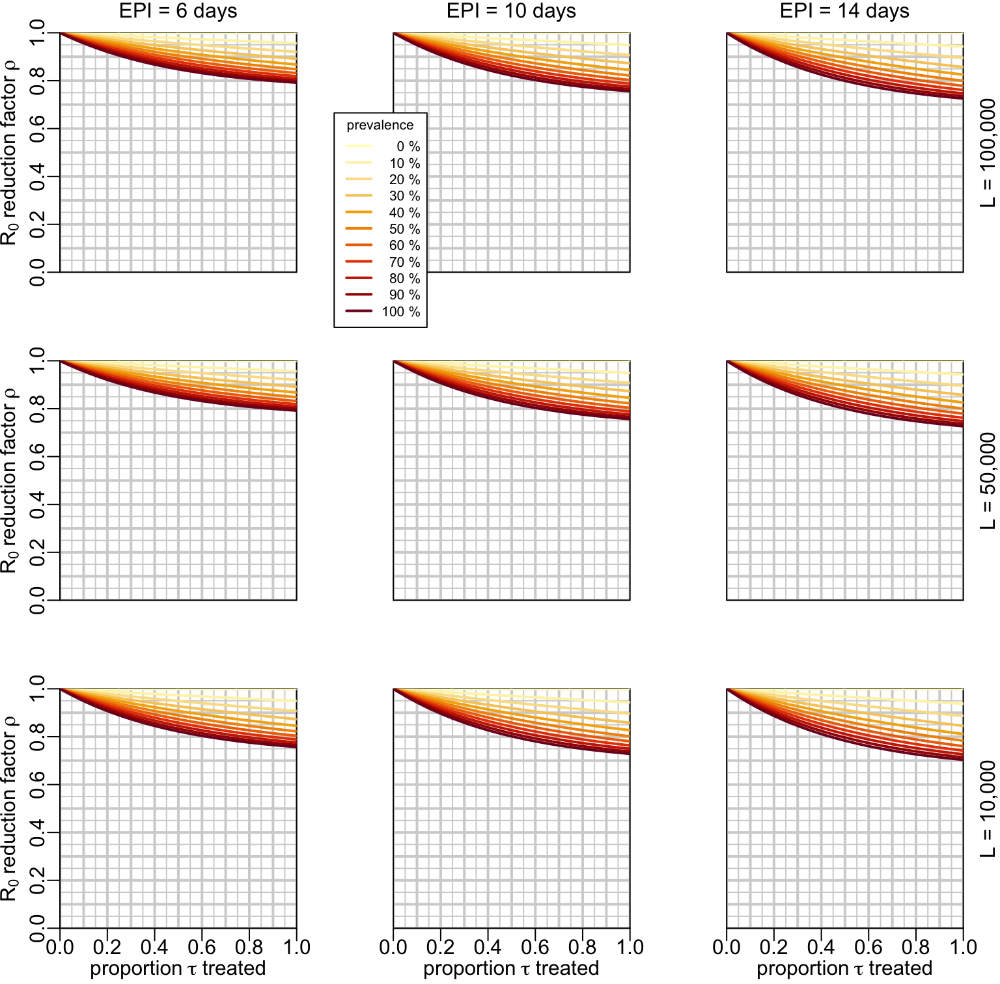
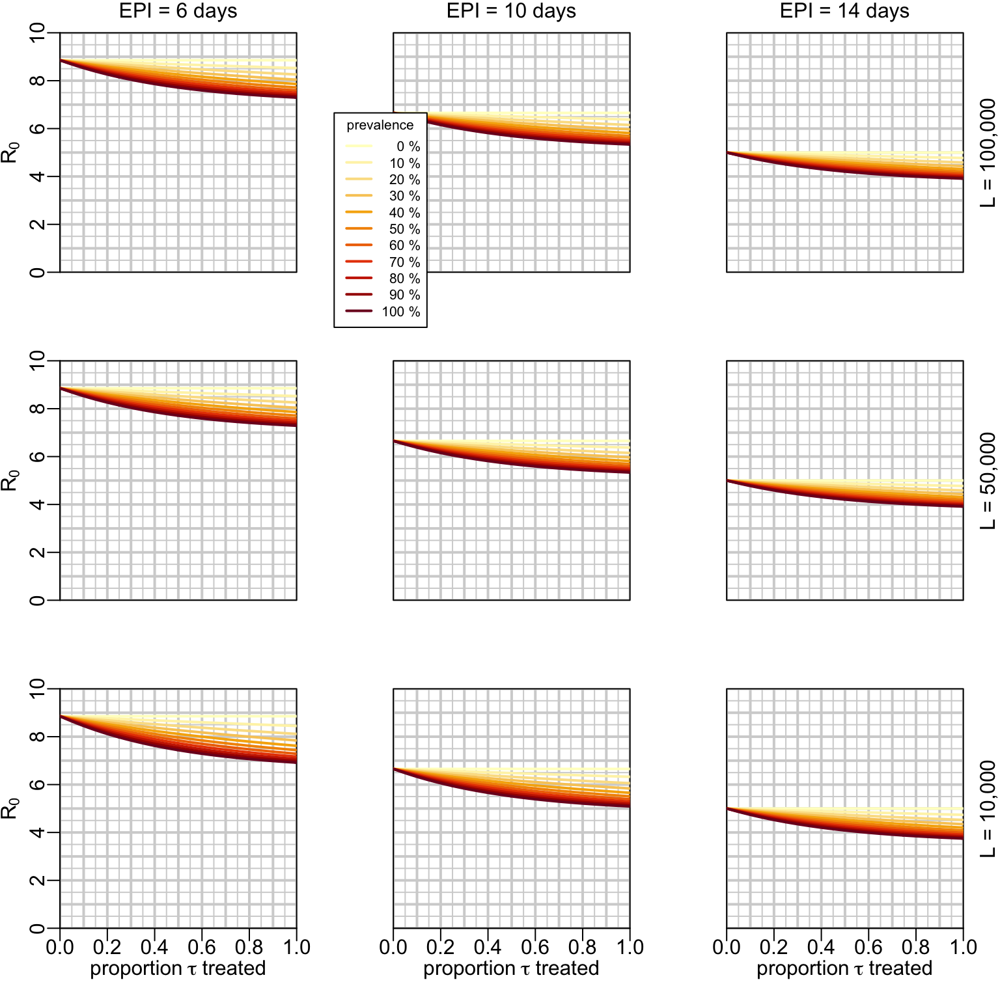

path2data <- paste0(Sys.getenv("HOME"), "/Library/CloudStorage/",
"OneDrive-OxfordUniversityClinicalResearchUnit/",
"GitHub/choisy/malarone/")Mosquito-mediated epidemiological effects of malarone treatment
In this analysis we use the formalism of Smith and McKenzie (2004).
1 Parameters
The path to the data:
Whether or not to force the effects to be equal to \(0\) at \(t = 28\) days (in practice it does not change things much anyway):
t28_0 <- TRUEColors:
YlOrRd10 <- hcl.colors(10, "YlOrRd", rev = TRUE)
YlOrRd11 <- hcl.colors(11, "YlOrRd", rev = TRUE)
color1 <- 2
color2 <- 3
color3 <- 4Line width:
lwd_val <- 2Plot labels:
xlab_pda <- "time post drug administration (hours)"
ylab_delta <- bquote(R[0] ~ "reduction factor" ~ delta)
ylab_pi <- bquote(R[0] ~ "reduction factor" ~ pi)
ylab_rho <- bquote(R[0] ~ "reduction factor" ~ rho)
ylab_b <- bquote("reducing factor on b and" ~ R[0])Plots parameters sets:
mcx <- 3 / 2
parmfrow33 <- function() {
par(mfrow = c(3, 3), mex = mcx, cex.axis = mcx, cex.lab = mcx, cex.main = mcx)
}2 Packages
Required packages:
required_packages <- c("readr", "readxl", "dplyr", "purrr", "stringr", "tibble")Installing those that are not installed:
to_inst <- required_packages[! required_packages %in% installed.packages()[,"Package"]]
if (length(to_inst)) install.packages(to_inst)Loading some for interactive use:
library(dplyr)
library(purrr)3 Functions
Tuning some base functions:
seq2 <- function(...) seq(..., le = 512)
abline2 <- function(...) abline(..., col = "grey")
lines2 <- function(...) lines(..., lwd = lwd_val)
lines3 <- function(...) lines2(..., col = color1)
segments2 <- function(...) segments(..., col = color3, lwd = lwd_val)
plot2 <- function(...) plot(..., col = color3, pch = 3, lwd = lwd_val)
plotl <- function(...) plot(..., type = "l", col = color1, lwd = lwd_val)
arrows2 <- function(...) arrows(..., col = color2, length = .15, lwd = lwd_val)
readRDS2 <- function(f, ...) tibble::as_tibble(readRDS(paste0(path2data, f), ...))
legend2 <- function(...) legend(bty = "n", lty = 1, lwd = lwd_val, ...)A function that performs numerical integration using the trapezoid method:
trapezoid <- function(f, lower, upper, nb = 1e4) {
step <- (upper - lower) / nb
y <- f(seq(lower, upper, le = nb + 1))
step * (y[1] + 2 * sum(y[-1])) / 2
}A function that replaces the value at index i in a vector v by the minimum of the values of v with an index equal or higher than i:
min_of_following <- function(x) {
c(min(x), map_dbl(1:(length(x) - 1), ~ min(x[-(1:(.x))])))
}4 Theoretical results
In this section we pull out the most relevant theoretical results from Smith and McKenzie (2004).
The individual vectorial capacity (noted \(IC\) in Smith and McKenzie (2004) but noted \(C\) here) is defined by Saul et al. (1990) as the expected number of infectious bites from a single vector after feeding on an infectious host and reads:
\[ C = c \cdot P_e \cdot S \]
where \(c\) is the transmission efficiency from human to mosquito (i.e. the probability of becoming infected after feeding on an infectious human), \(P_e\) is the probability of becoming infectious for an infected mosquito:
\[ P_e = e^{-gn} \] (with \(g\) the mosquito death rate and \(n\) the EIP), and \(S\) is the stability index, i.e. the total number of bites per mosquito during its lifetime:
\[ S = \frac{a}{g} \]
with \(a\) the mosquito biting rate, i.e. the number of bites per mosquito. Gathering everything gives:
\[ C = c \cdot e^{-gn}\frac{a}{g} \]
The basic reproduction ratio is the expected number of infected humans per infected human or, equivalently, the expected number of infected mosquitoes per infected mosquito and can be expressed as:
\[ R_0 = \frac{C \cdot b \cdot a \cdot m}{r} \tag{1}\]
where \(C\) is the above-defined individual vectorial capacity, \(b\) is the transmission efficiency from mosquito to human, \(r\) is the recovery rate of humans, and \(m\) is the ratio of mosquitoes to humans.
Finally, the prevalance \(\bar{X}\) (i.e. proportion of infected humans) at equilibrium can be expressed as a function of \(R_0\):
\[ \bar{X} = \frac{R_0 - 1}{R_0 + c S} \]
Note the main assumption of this framework:
Assumption 1: the mosquito death rate is independent of the mosquito’s age.
5 Experimental data
The experimental results suggest that malarone
- decreases by the multiplicative factor \(1 - \alpha\) (\(0 \leq \alpha \leq 1\)) the number of mosquitoes with sporozoites (with \(\alpha\) shown on the \(y\) axis of Figure 3B);
- decreases by the multiplicative factor \(1 - \beta\) (\(0 \leq \beta \leq 1\)) the sporozoites load in mosquitoes still harboring sporozoites (with \(\beta\) shown on the \(y\) axis of Figure 4B);
- decreases by the multiplicative factor \(1 - \gamma\) (\(0 \leq \gamma \leq 1\)) the size of oocysts at 7 days post infection (with \(\gamma\) shown on the \(y\) axis of Figure 5A);
- has no effect on the mosquito biting rate \(a\) (Figure 7A);
- has no effect on the mosquito death rate \(g\) (Figure 7B).
Let’s see below how we can integrate these 3 effects \(\alpha\), \(\beta\) and \(\gamma\) into the theoretical equations of the previous section.
5.1 Mosquitoes with sporozoites
Below, we generate the function \(\alpha(t)\) from the experimental data of Figure 3B. First we need a function that reads experimental data for the treatment group:
make_reading_exp_data <- function() {
hours <- c(0, 5, 48, 72)
days <- c(5, 7, 14, 28)
hash <- c(setNames(hours, paste0("H", hours)),
setNames(24 * days, paste0("D", days)))
function(file) {
file |>
readRDS2() |>
filter(treatment == "AL+AP") |>
mutate(time_hours = hash[stringr::str_remove(time_points, "0")],
across(Inhibition, ~ .x / 100))
}
}
reading_exp_data <- make_reading_exp_data()We also need a function that converts such experimental data into a function:
data2function <- function(data, correction = t28_0) {
apply_correction <- function(x) {
if (correction) return(mutate(x, median_val = c(head(median_val, -1), 0)))
x
}
data |>
group_by(time_hours) |>
summarise(median_val = max(0, median(Inhibition))) |>
bind_rows(tibble(time_hours = 0, median_val = 0)) |>
arrange(time_hours) |>
apply_correction() |>
with(approxfun(time_hours, median_val))
}where correction = TRUE means that the value at \(t = 28\) days is forced to be equal to \(0\). Let’s now pull out the data from Figure 3B:
alpha_data <- reading_exp_data("percentage_inhibition9.rds")and create a function alpha() of the percentage \(\alpha(t)\) inhibition on sporozoite infection rate as a function of time \(t\) post drug administration:
alpha <- data2function(alpha_data)Let’s now visualize this function. For that we first need a function that plots experimental data:
plot_experimental_data <- function(data, ...) {
with(data, plot2(jitter(time_hours), Inhibition, xlab = xlab_pda, ...))
abline(h = 0)
}With this function plot_experimental_data() defined, this is what the \(\alpha(t)\) function coded in alpha() looks like together with the experimental data:
plot_experimental_data(alpha_data, ylim = c(-1, 1),
ylab = bquote("reduction" ~ alpha ~
"of mosquitoes with sporozoites"))
pda_t <- seq2(0, 700)
lines3(pda_t, alpha(pda_t))The reduction factor \(1 - \alpha\) of the number of mosquitoes with sporozoites (Figure 3B) converts directly into a transmission-blocking activity (TBA) of similar magnitude on the mean individual vectorial capacity:
\[ (1 - \alpha(t))\cdot C \]
where \(C\) is the vectorial capacity in absence of malarone and \(t\) is the time post drug administration. Similarly, Equation 1 shows that the reduction of \(R_0\) is
\[ (1 - \alpha(t))\cdot R_0 \]
where \(R_0\) is the basic reproduction ratio in absence of malarone.
5.2 Number of sporozoites
Let’s pull out the data from Figure 4B:
beta_data <- reading_exp_data("newTRA.rds")and create a function beta(t) on the percentage \(\beta(t)\) inhibition on sporozoite load as a function of time \(t\) post drug administration:
beta <- data2function(beta_data)And let’s visualize this function \(\beta(t)\) together with the experimental data:
plot_experimental_data(beta_data, ylim = c(-1, 1),
ylab = bquote("reduction" ~ beta ~
"of the number L of sporozoites"))
betas <- beta(pda_t)
lines3(pda_t, betas)The integration of the \(\beta\) effect into Equation 1 is less direct and straight-forward than for \(\alpha\). To do so, we need to understand how a reduction in the sporozoite load \(L\) translates into a reduction of \(b\) in Equation 1. Figure 2B from Aleshnick et al. (2020) suggests a non-linear relationship between the sporozoite load \(L\) and the transmission efficiency \(b\) from mosquito to human. The effect of \(\beta\) on \(b\) can thus be modelled as so:
\[ \frac{f((1 - \beta(t))L)}{f(L)}b \tag{2}\]
where \(b\) is the mosquito-to-human transmission efficiency in absence of malarone and \(f\) is the functional relationship between the sporozoite load \(L\) and the mosquito-to-human transmission efficiency \(b\) documented on Figure 2B of Aleshnick et al. (2020) and that we reproduce here:
make_f <- function(x1, x2, y1, y2) {
function(x) {
purrr::map_dbl(x, function(x) {
if(is.na(x)) return(NA)
if (x < x1) return(x * y1 / x1)
y1 + (x - x1) * (y2 - y1) / (x2 - x1)
})
}
}
f <- make_f(x1 = 21111, x2 = 1e5, y1 = .285, y2 = .344)And this is what this function \(f\) function coded in f() looks like:
L_val <- seq2(0, 1e5)
plotl(L_val, f(L_val),
xlab = "salivary gland sporozoite load L", ylab = "infection probability f")
A tuning of legend2():
legend3 <- function(...) {
legend2(title = "sporozoite load L", col = rev(YlOrRd10),
legend = c(bquote(1 ~ "x" ~ 10^5),
sapply(9:1, function(a) bquote(.(a) ~ "x" ~ 10^4))), ...)
}From here, let’s compute the TRA as a function of the (unknown) sporozoite load \(L\) using Equation 2:
beta_val <- seq2(0, 1)
opar <- par(pty = "s", xpd = TRUE)
plot(0:1, 0:1, type = "l", xaxs = "i", yaxs = "i", ylab = ylab_b,
xlab = bquote("reducing factor 1 -" ~ beta ~ "on sporozoite load L"))
walk2(1:10 * 1e4, YlOrRd10,
~ lines2(beta_val, f(beta_val * .x) / f(.x), col = .y))
legend3("topright", inset = c(-.5, 0))
box(bty = "o")
par(opar)By combining Figure 1 and Figure 2 we obtain the reduction factor of \(b\) and \(R_0\) as a function of time \(t\) post drug administration and (unknown) sporozoite load \(L\) before malarone ingestion:
plot(NA, xlim = c(0, 700), ylim = 0:1, xlab = xlab_pda, ylab = ylab_b)
walk2(1:10 * 1e4, YlOrRd10,
~ lines(pda_t, f((1 - betas) * .x) / f(.x), col = .y, lwd = lwd_val))
legend3("right")
5.3 Sizes of oocysts at 7dpi
Malarone decreases by the multiplicative factor \(1 - \gamma\) (\(0 \leq \gamma \leq 1\)) the size of oocysts at 7 dpi. Furthermore, figure 5B from Werling et al. (2019) suggests a linear relationship between the development time and the oocyst size. By assuming that the EIP corresponds to a given size of the oocysts, we can model the effect of \(\gamma\) on \(n\) as so:
\[ \frac{1}{1 - \gamma(t)}n \]
With this established, let’s now pull out the data from Figure 5A:
gamma_data <- reading_exp_data("percentage_inhibition_size2.rds")and create a function gamma() on the percentage \(\gamma(t)\) decrease in oocysts size at 7 dpi as a function of time \(t\) post drug administration:
gamma <- data2function(gamma_data)And let’s visualize this function \(\gamma(t)\) together with the experimental data:
plot_experimental_data(gamma_data, ylim = c(-.65, .65),
ylab = bquote("sporozoite size reduction factor" ~ gamma))
lines3(pda_t, gamma(pda_t))Assumption 2: the EIP corresponds to a given size of the oocysts.
5.4 Combining the 3 effects
In this section we combine the 3 effects reviewed above into a reduction effect of the basic reproduction ratio \(R_0\). If we assume that all the mosquitoes feed on people who received malarone \(t\) time units ago, the reduction factor \(\delta(t)\) of \(R_0\) reads:
\[ \delta(t, g, n, L) = (1 - \alpha(t))\frac{f((1 - \beta(t))L)}{f(L)}e^{-gn\gamma(t)/(1-\gamma(t))} \] where \(L\) is the mean sporozoite load in absence of malarone. The corresponding R code:
delta <- function(t, L, g, n) {
(1 - alpha(t)) *
exp(- g * n * gamma(t) / (1 - gamma(t))) *
f((1 - beta(t)) * L) / f(L)
}Note 1: \(g\) and \(n\) should be expressed in the same time units.
Note 2: \(t\) should be expressed in hours.
If we now assume that all the mosquitoes feed on people who were treated sometimes during the past \(D\) time units, then the mean reduction factor of \(R_0\) reads:
\[ \lambda(g, n, L, D) = \frac{1}{D}\int_0^D\delta(t, g, n, L)dt \tag{3}\]
Ideally, we’d like \(D\) to be large enough so that \(\delta(t = D, g, n, L)\simeq 0\). The corresponding R code is:
lambda <- function(D, L, g, n, nb = 1e6) {
trapezoid(function(x) delta(x, L, g, n), 0, D, nb) / D
}Note 1: \(g\) and \(n\) should be expressed in the same time units.
Note 2: \(D\) should be expressed in hours.
6 Epidemiological effects of malarone
In this section we use \(\lambda\) to develop what interests us here: the mosquito-mediated epidemiological effects of malarone. Since we are interested only in the effect of malarone that is mediated by the mosquito compartment, in what follows we’ll disregard the direct and intended effect of malarone, which is the curation of infected people. We will also consider two types of use of malarone: mass treatment where a given proportion of the population is treated independently of their clinical status and treatment of the infected, which is the way that malarone is currently used. We’ll start however with the mass treatment as it’s the easiest case to model and it will provide us with a gold standard to which to compare the effects of the treatment of infected.
6.1 Mass treatment
Mass treatment is not affected by the epidemiological context so its mosquito-mediated effect \(\pi\) can be expresses as:
\[ \pi(\mu, g, n, L, D) = 1 - \left(1 - \min_{\Delta \ge D}\lambda\left(g, n, L, \Delta\right)\right)\mu \]
where \(\mu\) is the proportion of the population that receive the treatment and \(1/D\) is the frequency of treatment, assuming an absence of synchrony of treatment intake between people (i.e. the times at which each individual takes its treatment are random). The corresponding R codes:
pi1 <- function(D, L, g, n, mu) mu * (1 - lambda(D, L, g, n))and
pi2 <- function(lmbd, mu) mu * (1 - lmbd)Given that \(\lambda(g, n, L, D)\) is what takes time to compute, it might sometimes be advantageous to use pi2() instead of pi1() (see below).
Note: \(g\) and \(n\) should be expressed in the same time units.
6.2 Treatment of infected
Finally, let’s put the effect of malarone into an epidemiological context. If \(\bar{X}\) is the disease prevalence and \(r\) the human recovery rate, then we can approximate the disease incidence by \(\bar{X}r\). If \(\tau\) is the treatment coverage (i.e. the proportion of new cases who receive treatment), then the treatment incidence is \(\tau\bar{X}r\). This means that the proportion of people who received treatment sometimes during the past \(D\) time units is \(1 - e^{-\tau\bar{X}rD}\) and that the mean reduction factor \(\rho\) of \(R_0\) reads:
\[ \rho(g, n, L, \tau, \bar{X}, r, D) = 1 - \left(1 - e^{-\tau\bar{X}rD}\right)(1 - \lambda(g, n, L, D)) \tag{4}\]
The corresponding R codes:
rho1 <- function(D, L, g, n, X, tau, r) {
1 - (1 - exp(- tau * X * r * D)) * (1 - lambda(D, L, g, n))
}and
rho2 <- function(lmbd, D, X, tau, r) {
1 - (1 - exp(- tau * X * r * D)) * (1 - lmbd)
}Given that \(\lambda(g, n, L, D)\) is what takes time to compute, it might sometimes be advantageous to use rho2() instead of rho1() (see below).
Note 1: \(g\) and \(n\) should be expressed in the same time units.
Note 2: \(r\) and \(D\) should be both expressed in hours.
7 Numerical analysis
The table below lists the parameters of the models, together with their definitions and their values and units:
| parameter | definition | values | unit |
|---|---|---|---|
| \(g\) | mosquito death rate | 1 / 14 | /day. |
| \(n\) | extrinsic incubation period (EIP) | 6, 10 or 14 | days |
| \(r\) | human recovery rate | 1 / 14 | /day |
| \(L\) | sporozoite load | 10,000-100,000 | sporozoites |
| \(1/D\) | frequency of treatment intake | 1/28 - 1 | /day |
| \(\mu\) | mass treatment coverage | 0-100 | % |
| \(\tau\) | infected treatment coverage | 0-100 | % |
| \(\bar{X}\) | prevalence | 0-100 | % |
7.1 Reducing factor \(\delta(t)\)
The \(R_0\) reducing factor \(\rho(t)\) is computed by assuming that all the mosquitoes feed on people \(t\) hours after drug administration. For a mosquito life expectancy \(1/g\) of 14 days, an EPI \(n\) of 7 days, a sporozoite load of 60,000, if the all the mosquitoes feed on people 100 hours after drug administration, the \(R_0\) reducing factor \(\delta\) is:
(effect_at_t100 <- delta(t = 100, L = 6e4, g = 1 / 14, n = 7))[1] 0.2560804More generally, if all the mosquitoes feed on people \(t\) hours after drug administration, the \(R_0\) reducing factor looks like:
pda_t2 <- seq(0, 24 * 28, le = 2^10)
ys <- delta(t = pda_t2, L = 6e4, g = 1 / (14 * 24), n = 7 * 24)
plotl(pda_t2, ys, ylim = 0:1, xlab = xlab_pda, ylab = ylab_delta)
abline(v = 100, col = 4)
abline(h = effect_at_t100, col = 4)
points(100, effect_at_t100, col = 4)
where the blue point and lines show the case where all the mosquitoes feed on people 100 hours after drug administration. Let’s now look at the effect of the value of \(L\) on this curve:
plot(NA, xlim = c(0, 700), ylim = 0:1, xlab = xlab_pda, ylab = ylab_delta)
walk2(1:10 * 1e4, YlOrRd10,
~ lines(pda_t, delta(t = pda_t, L = .x, g = 1 / (14 * 24), n = 7 * 24),
col = .y, lwd = lwd_val))
legend3("right")
7.2 Mass treatment
The \(R_0\) reducing factor \(\lambda(t)\) is computed by assuming that all the mosquitoes feed on people that were treated sometimes during the past \(D\) time units. Considering that all the mosquitoes feed of people who received treatment in the past 28 days, the \(R_0\) reducing factor \(\lambda\) is:
(mean_effect_over28days <- lambda(D = 28 * 24, L = 6e4, g = 1 / 14, n = 7))(takes ca 1.5” ) which, on the previous plot, looks like:
plot(pda_t2, ys, ylim = 0:1, xaxs = "i", yaxs = "i", type = "n",
xlab = xlab_pda, ylab = ylab_delta)
polygon(c(pda_t2[1], pda_t2, tail(pda_t2, 1)), c(0, ys, 0),
border = NA, col = adjustcolor(4, .2))
lines3(pda_t2, ys)
abline(h = mean_effect_over28days, col = 4, lty = 2, lwd = lwd_val)
text(mean(pda_t2), 1.04 * mean_effect_over28days, col = 4,
bquote(" mean" ~ R[0] ~ "reduction factor" ~ lambda))
box(bty = "o")A function that computes the values for \(\lambda\):
compute_lambda_val <- function(D_val, n_val, L_val, g) {
out <- with(expand.grid(n_val, L_val),
map2(Var1, Var2, ~ map_dbl(D_val, lambda, L = .y, g = g, n = .x)))
attr(out, "params") <- list(D_val = D_val, n_val = n_val, L_val = L_val, g = g)
out
}Let’s now compute \(\lambda\) values (takes ca 7’00”):
lambda_vals <- compute_lambda_val(D_val = c(seq(1, 7, .1), 8:28) * 24,
n_val = c(6, 10, 14),
L_val = c(1, 5, 10) * 1e4,
g = 1 / 14)(takes ca 19’00”):
lambda_vals2 <- compute_lambda_val(D_val = c(seq(1, 7, .1), 8:28) * 24,
n_val = c(6, 10, 14),
L_val = c(1, 5, 10) * 1e4,
g = 1 / 10)(takes ca 19’00”):
lambda_vals3 <- compute_lambda_val(D_val = c(seq(1, 7, .1), 8:28) * 24,
n_val = c(6, 10, 14),
L_val = c(1, 5, 10) * 1e4,
g = 1 / 7)A function that plots the effect of mass treatment:
xmax <- 30
plot_mass_treatment <- function(x, y, x_axis = TRUE, y_axis = TRUE, ylim = 0:1,
xlab = "intake frequency (every D days)",
ylab = ylab_pi,
hlines = seq(0, 1, .1), transform = 1) {
plot(rev(x), y, xlim = c(xmax, 0), ylim = ylim, type = "n",
xlab = xlab, ylab = ylab, xaxs = "i", yaxs = "i", axes = FALSE)
box(bty = "o")
if (x_axis) {axis(1, seq(0, xmax, 5)); axis(1, c(15, 25))}
if (y_axis) axis(2)
abline(v = seq(0, xmax, 5), col = "grey")
abline(h = hlines, col = "grey")
walk2(seq(0, 1, .1), YlOrRd11,
~ lines(rev(x), rev((1 - (1 - min_of_following(y)) * .x) * transform),
col = .y, lwd = lwd_val))
}Some mtext() tuning for the multipanel figures:
mtext2 <- function(x) mtext(paste("EPI =", x, "days"), 3, .5)
mtext3 <- function(x) {
mtext(paste("L =", format(x, scientific = FALSE, big.mark = ",")), 4, .75)
}A tuning of legend() for the multipanel figures:
legend4 <- function(...) {
legend(lty = 1, lwd = lwd_val, adj = c(1, .5), x.intersp = 4, ...)
}
legend5 <- function(...) {
par(xpd = TRUE)
legend4(col = YlOrRd11, inset = c(-.25, -.23), ...)
par(xpd = FALSE)
}The function that uses plot_mass_treatment() to make a multipanel figure using the output of compute_lambda_val():
multipanels_mass <- function(lambda_vals, ylim = 0:1,
ylab = ylab_pi,
hlines = seq(0, 1, .1), R0o = NULL) {
params <- attr(lambda_vals, "params")
if (is.null(R0o)) {
trnsfrm <- rep(1, 3)
} else {
trnsfrm <- with(params, R0o * exp(1 - g * n_val))
}
plot_mass_treatment2 <- function(y, ylob = ylab, ...) {
plot_mass_treatment(params$D_val / 24, y, ylim = ylim, ylab = ylob,
hlines = hlines, ...)
}
plot_mass_treatment3 <- function(y, ...) {
plot_mass_treatment2(y, xlab = NA, x_axis = FALSE, ...)
}
plot_mass_treatment4 <- function(y, ...) {
plot_mass_treatment2(y, ylob = NA, y_axis = FALSE, ...)
}
plot_mass_treatment5 <- function(y, ...) {
plot_mass_treatment4(y, xlab = NA, x_axis = FALSE, ...)
}
opar <- parmfrow33()
plot_mass_treatment3(lambda_vals[[7]], transf = trnsfrm[1])
mtext2(params$n_val[1])
plot_mass_treatment5(lambda_vals[[8]], transf = trnsfrm[2])
mtext2(params$n_val[2])
legend5("bottomleft", title = "proportion treated", text.width = .5,
legend = paste(seq(0, 100, 10), "%"))
plot_mass_treatment5(lambda_vals[[9]], transf = trnsfrm[3])
mtext2(params$n_val[3])
mtext3(params$L_val[3])
plot_mass_treatment3(lambda_vals[[4]], transf = trnsfrm[1])
plot_mass_treatment5(lambda_vals[[5]], transf = trnsfrm[2])
plot_mass_treatment5(lambda_vals[[6]], transf = trnsfrm[3])
mtext3(params$L_val[2])
plot_mass_treatment2(lambda_vals[[1]], transf = trnsfrm[1])
plot_mass_treatment4(lambda_vals[[2]], transf = trnsfrm[2])
plot_mass_treatment4(lambda_vals[[3]], transf = trnsfrm[3])
mtext3(params$L_val[1])
par(opar)
}multipanels_mass(lambda_vals)
multipanels_mass(lambda_vals2)
multipanels_mass(lambda_vals3)
7.3 Treatment of infected
If we take the example of the previous section and put it into an epidemiological context of a prevalence of 10% and assuming that 90% of the people infected are given a treatment, the \(R_0\) reducing factor \(\rho\) is:
rho1(D = 28 * 24, L = 6e4, g = 1 / 14, n = 7, X = .1, tau = .9, r = 1 / (14 * 24))(which takes 1.5”). Alternatively (and faster):
rho2(mean_effect_over28days, D = 28 * 24, X = .1, tau = .9, r = 1 / (14 * 24))[1] 0.9656542A function that computes the values for \(\rho\):
compute_rho_val <- function(X_val, tau_val, n_val, L_val, D, g, r, nb) {
one_subplot <- function(n, L) { # i.e. for given values of n and L
lambda_val <- lambda(D, L, g, n, nb)
expand.grid(X_val, tau_val) |>
with(map2_dbl(Var1, Var2, rho2, lmbd = lambda_val, D = D, r = r)) |>
matrix(length(X_val)) |> t() |> as.data.frame()
}
out <- with(expand.grid(n_val, L_val), map2(Var1, Var2, one_subplot))
attr(out, "params") <- list(X_val = X_val, tau_val = tau_val, n_val = n_val,
L_val = L_val, D = D, g = g, r = r, nb = nb)
out
}A function that plots the computed \(\rho\) values as a function of the proportion \(\tau\) of infected people that are treated (i.e. one slot of the output of compute_rho_val():
abline3 <- function(...) abline(..., col = "lightgrey")
abline4 <- function(...) abline3(..., lwd = lwd_val)
plot_treatment_infected <- function(x, y, x_axis = TRUE, y_axis = TRUE, ylim = 0:1,
xlab = bquote("proportion" ~ tau ~ "treated"),
ylab = ylab_rho,
hlines1 = seq(0, 1, .1), hlines2 = seq(0, 1, .05),
transform = 1) {
plot(NA, xlim = 0:1, ylim = ylim, type = "n", xaxs = "i", yaxs = "i", axes = FALSE,
xlab = xlab, ylab = ylab)
if (x_axis) axis(1)
if (y_axis) axis(2)
abline3(v = seq(0, 1, .05))
abline4(v = seq(0, 1, .1))
abline4(h = hlines1)
abline3(h = hlines2)
box(bty = "o")
walk2(y, YlOrRd11, ~ lines(x, .x * transform, col = .y, lwd = lwd_val))
}Let’s compute some \(\rho\) values (it takes 15”):
rho_val1 <- compute_rho_val(X_val = seq(0, 1, .1),
tau_val = seq2(0, 1),
n_val = c(6, 10, 14),
L_val = c(1, 5, 10) * 1e4,
D = 28 * 24,
g = 1 / 14,
r = 1 / (14 * 24),
nb = 1e6)(it takes 15”):
rho_val2 <- compute_rho_val(X_val = seq(0, 1, .1),
tau_val = seq2(0, 1),
n_val = c(6, 10, 14),
L_val = c(1, 5, 10) * 1e4,
D = 28 * 24,
g = 1 / 10,
r = 1 / (14 * 24),
nb = 1e6)(it takes 15”):
rho_val3 <- compute_rho_val(X_val = seq(0, 1, .1),
tau_val = seq2(0, 1),
n_val = c(6, 10, 14),
L_val = c(1, 5, 10) * 1e4,
D = 28 * 24,
g = 1 / 7,
r = 1 / (14 * 24),
nb = 1e6)The function that uses plot_treatment_infected() to make a multipanel figure using the output of compute_rho_val():
multipanels_infected <- function(rho_val, ylim = 0:1,
ylab = ylab_rho,
hlines1 = seq(0, 1, .1), hlines2 = seq(0, 1, .05),
R0o = NULL) {
params <- attr(rho_val, "params")
if (is.null(R0o)) {
trnsfrm <- rep(1, 3)
} else {
trnsfrm <- with(params, R0o * exp(1 - g * n_val))
}
plot_treatment_infected2 <- function(y, ylob = ylab, ...) {
plot_treatment_infected(params$tau_val, y, ylim = ylim, ylab = ylob,
hlines1 = hlines1, hlines2 = hlines2, ...)
}
plot_treatment_infected3 <- function(y, ...) {
plot_treatment_infected2(y, xlab = NA, x_axis = FALSE, ...)
}
plot_treatment_infected4 <- function(y, ...) {
plot_treatment_infected2(y, ylob = NA, y_axis = FALSE, ...)
}
plot_treatment_infected5 <- function(y, ...) {
plot_treatment_infected4(y, xlab = NA, x_axis = FALSE, ...)
}
op <- par(mfrow = c(3, 3), mex = mcx, cex.axis = mcx, cex.lab = mcx, cex.main = mcx)
plot_treatment_infected3(rho_val[[7]], transf = trnsfrm[1])
mtext2(params$n_val[1])
plot_treatment_infected5(rho_val[[8]], transf = trnsfrm[2])
mtext2(params$n_val[2])
legend5("bottomleft", title = "prevalence", text.width = 0,
legend = paste(seq(0, 100, 10), "%"))
plot_treatment_infected5(rho_val[[9]], transf = trnsfrm[3])
mtext2(params$n_val[3])
mtext3(params$L_val[3])
plot_treatment_infected3(rho_val[[4]], transf = trnsfrm[1])
plot_treatment_infected5(rho_val[[5]], transf = trnsfrm[2])
plot_treatment_infected5(rho_val[[6]], transf = trnsfrm[3])
mtext3(params$L_val[2])
plot_treatment_infected2(rho_val[[1]], transf = trnsfrm[1])
plot_treatment_infected4(rho_val[[2]], transf = trnsfrm[2])
plot_treatment_infected4(rho_val[[3]], transf = trnsfrm[3])
mtext3(params$L_val[1])
par(op)
}multipanels_infected(rho_val1)multipanels_infected(rho_val2)
multipanels_infected(rho_val3)7.4 Examples with \(R_0\)
If we want to look at a specific example of \(R_0\), we need to acknowledge that, everything else being constant, \(R_0\) is proportional to the probability \(P_e\) of an infected mosquito to become infectious:
\[ R_0 \propto e^{-gn} \]
with this being considered, let’s now consider for example a reference value of \(R_0 = 5\) in absence of treatment and when the EPI \(n\) is equal to the mosquito life expectancy \(1/g = 14\) days. The effect of mass treatment would look like:
ymax <- 10
multipanels_mass(lambda_vals, ylim = c(0, ymax),
ylab = bquote(R[0]), hlines = 0:ymax, R0o = 5)
ymax <- 10
multipanels_mass(lambda_vals2, ylim = c(0, ymax),
ylab = bquote(R[0]), hlines = 0:ymax, R0o = 5)
ymax <- 10
multipanels_mass(lambda_vals3, ylim = c(0, ymax),
ylab = bquote(R[0]), hlines = 0:ymax, R0o = 5)
And the effect of the treatment of the infected would look like:
ymax <- 10
multipanels_infected(rho_val1, ylim = c(0, ymax), ylab = bquote(R[0]),
hlines1 = 0:ymax, hlines2 = seq(0, ymax, .5), R0o = 5)
ymax <- 10
multipanels_infected(rho_val2, ylim = c(0, ymax), ylab = bquote(R[0]),
hlines1 = 0:ymax, hlines2 = seq(0, ymax, .5), R0o = 5)ymax <- 10
multipanels_infected(rho_val3, ylim = c(0, ymax), ylab = bquote(R[0]),
hlines1 = 0:ymax, hlines2 = seq(0, ymax, .5), R0o = 5)7.5 Main text figure
This is the figure that shows the mass treatment and the treatment of infected for \(L = 50,000\) and \(n = 10\) days:
mtext4 <- function(...) mtext(..., line = -.5, cex = 2, font = 2)
at_val <- 4.7
xmax <- 30
leg <- paste(seq(0, 100, 10), "%")
nb_mid <- 3
opar <- par(mfrow = 1:2)
plot_mass_treatment(attr(lambda_vals, "params")$D_val / 24, lambda_vals[[5]])
legend4("bottomleft", title = "proportion treated", text.width = .5,
col = c(YlOrRd11[1:3], rep("#FFFFFF", nb_mid), YlOrRd11[10:11]),
legend = c(leg[1:3], rep(".", nb_mid), leg[10:11]))
mtext4("a", at = at_val + xmax)
plot_treatment_infected(attr(rho_val1, "params")$tau, rho_val1[[5]])
legend4("bottomleft", title = "prevalence", col = YlOrRd11, text.width = 0,
legend = leg)
mtext4("b", at = - at_val / xmax)par(opar)mtext4 <- function(...) mtext(..., line = -.5, cex = 2, font = 2)
at_val <- 4.7
xmax <- 30
leg <- paste(seq(0, 100, 10), "%")
nb_mid <- 3
opar <- par(mfrow = 1:2)
plot_treatment_infected(attr(rho_val1, "params")$tau, rho_val1[[5]])
legend4("bottomleft", title = expression(paste("prevalence ", bar(X))),
col = YlOrRd11, text.width = 0, legend = leg)
mtext4("a", at = - at_val / xmax)
plot_mass_treatment(attr(lambda_vals, "params")$D_val / 24, lambda_vals[[5]])
legend4("bottomleft", title = "proportion treated", text.width = .5,
col = c(YlOrRd11[1:3], rep("#FFFFFF", nb_mid), YlOrRd11[10:11]),
legend = c(leg[1:3], rep(".", nb_mid), leg[10:11]))
mtext4("b", at = at_val + xmax)
par(opar)References
Aleshnick, M., V. V. Ganusov, G. Nasir, G. Yenokyan, and P. Sinnis. 2020. Experimental determination of the force of malaria infection reveals a non-linear relationship to mosquito sporozoite loads. PLoS Pathog 16:e1008181.
Saul, A. J., P. M. Graves, and B. H. Kay. 1990. A cyclical feeding model for pathogen transmission and its application to determine vectorial capacity from vector infection rates. J Appl Ecol 27:123.
Smith, D. L., and E. F. McKenzie. 2004. Statics and dynamics of malaria infection in Anopheles mosquitoes. Malar J 3:13.
Werling, K., W. R. Shaw, M. A. Itoe, K. A. Westervelt, P. Marcenac, D. G. Paton, D. Peng, et al. 2019. Steroid hormone function controls non-competitive Plasmodium development in Anopheles. Cell 177:315–325.e14.